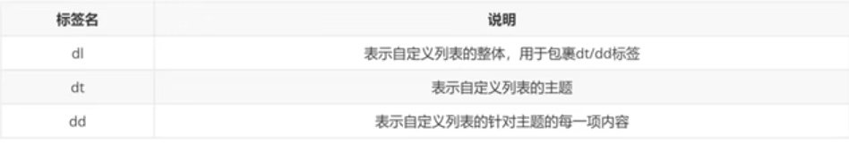
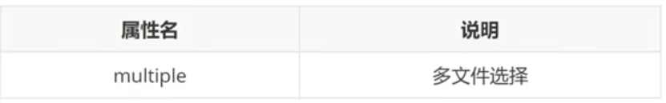
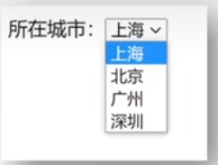

转义
换行
<br>
分割线
<hr>
标签i,b,u,s的用法

列表
无序<ul>（li）
有序<ol>（li)
自定义<dl>（dt，dd)

表格
表格<table>（tr，td)
表格属性
border(边框宽度)
width（边框表格宽度）
height（表格高度）
其他属性
caption(表格大标题)
th（表头单元格）
结构标签
thead（头）
tbody（主体）
tfoot（底部）
合并单元格
rowspan（垂直合并）
colspan（水平合并）
表单（input属性）
text（文本框)
password（密码框）
radio（单选框）
checkbox（多选框）
file（文件选择）
submit（提交按钮）
reset（重置按钮）
button（普通按钮，默认无功能，之后配合is添加功能）
name单选必须一样，checked是默认选中
多文件选择，multiple(语法<input type="file">)

submit(提交按钮),reset(重置按钮),button(普通按钮,默认无功能)

button按钮属性
submit（提交按钮）
reset（重置按钮）
button(普通按钮)
下拉菜单select(option)
selected(默认选中)

文本域（textarea）

文字单选（label标签）
布局标签（手机端）
css
选择器
通配符（*{参数}）
class（.class名{参数}）
id（#id名{参数}）
标签（标签名{参数}）
字体样式
文字大小（font-size 默认16）
文字粗细（font-weight 默认400）
文字倾斜（font-style 倾斜italic）
字体选择（font-family 注意渲染规则）
字体font属性复写（font : style weight size family;）（宽高，大小，字体）
文本样式
文本缩进:text-indent
文本水平对齐方式:text-align
文本修饰: text-decoration
1，文本缩进 text-indent (px,em 最好em)
2，水平对齐（左left 居中center 右right ）
3，文本修饰（text-decoration ）
underline（下划线(常用)）
line-through（删除线(不常用)）
overline（上划线(几乎不用)）
none（无装饰线(常用））

行高（line-height）
行高示意图
连写font注意（size/line-height）
颜色常见取值（了解）
选择器进阶
后代选择器（选择器1 选择器2{css}）
子代选择器（选择器1>选择器2{css}）
并集选择器（选择器1，选择器2{css}）
交集选择器（选择器1选择器2{css}）

伪类选择器（选择器:hover{css}）
emment快捷语法
emment快捷语法（vscode）
背景相关属性
背景图（background-img（bgi））
背景平铺background-repeat (bgr)
背景位置调整background-position (bgp)
水平方向（left，center,right）
垂直方向(top,center,bottom)
背景相关属性的连写形式 (bg)
语法 backgroud:color(背景颜色) image（背景图片） repeat（背景平铺方式） position （背景位置调整）
元素显示模式转换
元素显示模式转换 (display)
display:block(转换成块级元素)
display:inline-block（转换成行内块元素）
display:inline（转换成行内元素）
x选择器的优先级
继承<通配符选择器<标签选择器<类选择器<id选择器<行内样式<!important
div p{} < *{} < p{} < .class < #id < 行内样式 (<p style="">) < !important
盒子模型
内容（content） 内边距（padding） 边框区域（border）外边距（margin）
盒子边框 border : 10px{字体} solid{边框线条类型} red{线条颜色} ;
自动内减（box-sizing : border-box; ）
***********************************************************************************************